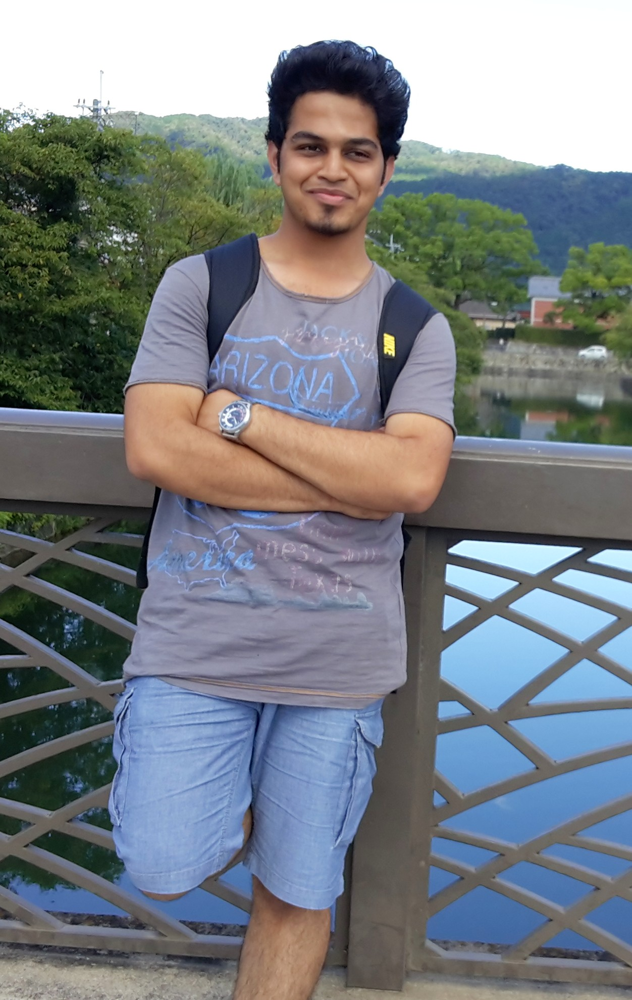
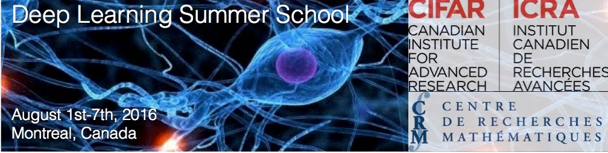
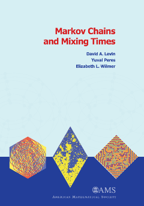

|
Tejas S Khot
I completed my Bachelors from University of Mumbai, India,
majoring in Computer Engineering. My research interests lie at the intersection of Machine Learning,
Computer Vision and Natural Language Processing. I am particularly interested in understanding the
cognitive abilities of humans with regards perception which encompasses several closely tied areas of
study. Many breakthroughs in deep learning, such as dropout and attention to name a few, have been inspired by their biological
counterparts. I want to study how intelligence emerges from raw data and its multi-modal associations with memory,
perception and action. At some point in my academic career I wish to explore these and some of the other larger
goals of Artificial Intelligence.
Since July 2016, I am working as a Research Scholar with Dr. Dhruv Batra and
Dr. Devi Parikh who lead the
Machine Learning and Perception Lab and
Computer Vision Lab
respectively at Virgina Tech [Update Aug 2016 : My advisors have moved to Georgia Tech and are currently spending a year at Facebook AI Research as a Visiting Researchers].
For complex tasks such as Visual Question Answering,
language provides a strong prior that can often result in good superficial performance, without the underlying models
truly understanding the visual content. My current research focuses on addressing this bias and on ways to improve
the grounding of concepts from language and visuals.
I am also collaborating with Sarath Chandar, PhD student at
Université de Montréal, on the task of Knowledge Base Completion using Deep Learning.
Email /
GitHub /
LinkedIn
|

|
Undergraduate Thesis | Action Based Cognition :
Embodied Cognitive Robotics
Advisor : Dr.
Nagarjuna G.
, Tata Institute of Fundamental Research
Embodied cognition, the idea that the mind is not only connected to the body but that the body influences the mind, is
one of the more counterintuitive ideas in cognitive science. The embodied cognition hypothesis is the idea that cognition
is mediated by representations expressed in the vocabulary and format of sensory and motor representations. The core of the
embodied cognition hypothesis is the claim that the format of cognitive representations is modality-specific and not abstract
or amodal. The question that implicitly drives most research and discussion is: Why is the sensorimotor system activated
during tasks that do not overtly require sensorimotor processing? As a part of this exploratory thesis, taking the approach of
epigenetic robotics, we propose that cognitive process is linked with motor actions and is proprioceptive. According to this model,
there is no unconscious perception and all seeing is seeing as and cause of perception is conscious action. We show, via
simulations, how fundamental components of vision such as edge detection, depth perception and relative placement of objects in
a scene can be solved with minimal computation in the presence of motor actions.

|
Teaching Assistant - (Advanced) Introduction to Machine Learning, Virginia Tech, Fall 2016
I am currently working as a Teaching Assistant for the (Advanced) Introduction to Machine Learning Course(Fall 2016: ECE 5424) with Dr. Stefan Lee. I am responsible for setting up Kaggle competitions, curating homeworks and grading them.
[Course webpage]
|
|

|
Deep Learning Summer School - DLSS 2016, Montréal
I was selected to attend DLSS with full scholarship.
[DLSS Montréal]
|

|
Google Summer of Code 2015 | The OpenCog Foundation
Mentor : Yuhuang Hu, Dr. Ben Goertzel
Deep SpatioTemporal Inference Network (DeSTIN) is a scalable deep learning architecture that relies on a combination of
unsupervised learning and Bayesian inference. The paper
DeSTIN: A Scalable Deep Learning Architecture with Application to High-Dimensional Robust Pattern Recognition by
Itamar Arel, Derek Rose, and Robert Coop describes this method.
Briefly put, DeSTIN uses online clustering algorithms to hierarchically create cetroids in a way that loosely mimics the
way humans understand things. In the DeSTIN architecture a hierarchy of layers is used, where each layer consists of
multiple instantiations of an identical circuit or node which follow a defined spatial orientation for imaging
applications (generally speaking, however, the spatial relationship can vary according to the problem domain).
Each node learns to generalize and represent a temporal sequence of observations through unsupervised learning.
I implemented a new flavor of DeSTIN based on Stacked Convolutional Auto-encoders and tested on CIFAR-10 and CIFAR-100
datasets.
[project details]
[code]
[GSOC Page]
|

|
Research Intern, 2015 | Advanced Robotics Lab, University of Malaya
Advisor : Dr. Loo Chu Kiong
I worked on using conceptor networks to improve image
classification performance on datasets like MNIST, CIFAR-10, CIFAR-100. I also used Stacked Convolutional Auto-encoders and
spherical clustering, alongside hierarchical architectures like DeSTIN, for learning temporal dependencies in videos on
datasets like KTH.
|

|
Machine Learning Summer School - MLSS 2015, Kyoto
I was selected to attend MLSS with full scholarship. This was a fun intoduction to some very diverse topics in Machine Learning.
A lot of the material was new to me and it was
nice to learn about some advanced topics like Submodular Functions, Selective Inference, Concentration Inequalities, Stochastic
Optimization and the like.
[MLSS Kyoto]
|
|

|
Lectures on Probability and Stochastic Processes X
I was selected to attend, with scholarship, the 2015 LPS series on Markov chains: Mixing time, cover time, and rate of escape by Yuval Peres, Microsoft Research,
Redmond. This was a good mathematical extension to the limited material usually taught about Markov Chains in ML courses.
[LPS X]
|
|
|
ACM XRDS : The ACM Magazine for Students
From April 2015 - July 2016, I was the department head of the Pointers section of the magazine since April 2015.
In July 2016, I was promoted to the position of department head of the Hello World section.
[ACM XRDS]
[Get Involved]
[Github Repository]
|
|
|
MIT Media Lab : Design Innovation Workshop 2015
A week of DIY hacking as a part of the Smart Textiles track. I worked on two interesting projects:
- Singing Curtains : Flat fabric speakers made out of embroidered highly conductive thread and neodymium magnets which can be
embedded in any textile garment.
- Fabric moisture sensor : One of its kind fabric moisture sensor which detects wetness of fabric and wirelessly transmits
messages indicating moisture content. It not only detects moisture but also measures it.
[MIT DI India]
|
|
|
Software Development Intern | InvenZone
Generated regression based statistical models for time series approximation and predictive analytics. Experimented with an image
classification / object detection model.
[InvenZone]
|
|
|
Software Development Intern | Silver Leaf Capital Services
Developed a predictive model to predict stock splits in NSE(India) and BSE with over 90% accuracy. Designed and developed a prototype
for stock portfolio management system.
[Silver Leaf Caps]
|
|
|
Assistant Director | Indian International Model United Nations (IIMUN)
I was among the board of directors of IIMUN and in August 2012 we organised Asia's largest youth conference.
I lead the coordination council, a team of over 300 fellow students; worked in the marketing and delegate relations departments
leading to a 1.5x increase in the total participation and conducted training sessions on speech delivery and MUN skills for hundreds of students.
[IIMUN]
|
|